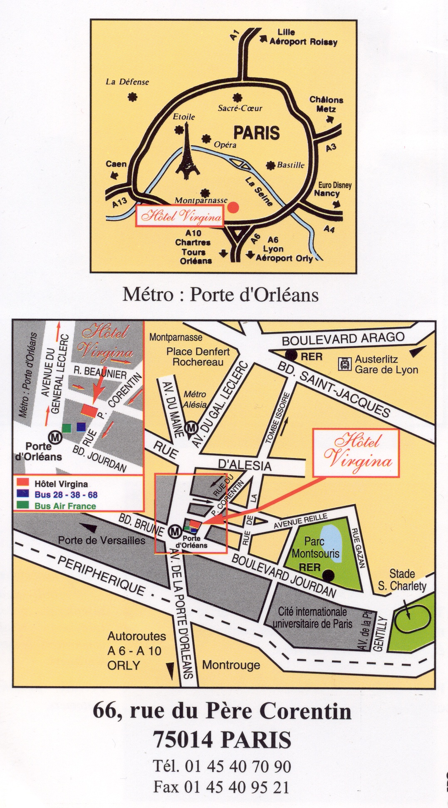

Pre-departure Information 2010
Cost Information
What is included in the program fee:
• Tuition for 3 credits
• International health/medical evacuation insurance
During the week in Paris
• Hotel stay beginning the night of Saturday, March 13 in double/triple occupancy
• All breakfasts (continental) beginning the morning of Sunday, March 14
• One week Métro pass
• Museum pass
• Entry fees for all group visits included in the itinerary: bike tour, bateau mouche ride, walking tours, trip to Versailles
• Transportation to and from the airport (if you are part of the group flight)
What is NOT included:
• Round-trip international airfare from RDU Airport to CDG (Roissy/Charles De Gaulle Airport) and return; transportation to and from the airport if you are NOT part of the group flight
• Personal expenses, souvenirs, etc. The amount you spend will vary depending on your personal travel plans. A minimum budget of $50-200 is recommended.
• During the week in Paris: Meals except continental breakfasts and group meals. Costs will depend on whether you eat primarily in restaurants or cafés, buy a sandwich at a boulangerie (bakery), purchase groceries to make sandwiches, or eat in fast-food restaurants. A minimum budget of $200 is recommended.
To summarize, we recommend a total minimum budget of $400. It is very easy to spend more than this, but it is also possible to have a great time without spending a lot of money.
Arrival Instructions (Please pack in your carry-on luggage)
The group flight is American Airlines 805: leaving RDU at 1:35 p.m. on Friday, March 12 and American Airlines 62 leaving Miami at 6:15 p.m., scheduled to arrive in Paris on Saturday, March 13 at 9:00 a.m. Try to sleep/nap on the plane to minimize jet lag. The flight takes about 7 hours overnight.
Be sure to share returning information with family and friends if you are being picked up at the airport. The return group flight information is: American 41 leaving Paris on Sunday March 21 at 11:20 a.m. and arriving in Chicago at 2:50 p.m. Then we fly American 1972 from Chicago to RDU, departing at 5:55 p.m. and arriving at RDU at 8:45 p.m.
If you arrive in Paris with the group, the flight will be met by a tour company representative who will take us by bus to our hotel in Paris. If you are traveling separately, you will need to get to the hotel on your own, ideally in the morning or early afternoon, Saturday, March 13. The directions below will help you to find the hotel.
If you miss the group flight or for some unexpected reason have to travel to Paris by yourself– don’t panic. Call the hotel (Hotel Virgina 66, rue du Père Corentin, 75014 Paris). To call in France: 01.45.40.70.90 or from the U.S. to France: 011.33.1.45.40.70.90. Leave a message for Madame Beckman explaining what the problem is and when you should be arriving. In the U.S., you can also call the NC State Study Abroad Office (919-515-2087) and they will get a message to us. (See below for information on using the phone.)
Map of Paris and Hotel Virgina:

If you do not arrive with the group, you will need to get to the hotel on your own. If you get confused or lost, there are information desks in the Charles de Gaulle Airport with English-speaking staff. You can take a taxi to the hotel for about 60-70€. The taxi driver will charge extra for your luggage and you should tip as well, so you'll need to have some euros. I recommend getting them at the ATM at the airport.
There are two other more affordable choices for getting into Paris:
1) Take the RER train and Metro/tram. You will receive a Métro pass from me in Paris, but that will not help you to get to the hotel from the airport. You can buy a ticket at the airport, and take the train, RER line 2. Get off at Cité Universitaire stop. The hotel is 10 minutes away on foot and one stop away on the T3 tram towards Pont du Gargliano. You’ll need a separate ticket for the tram. Porte d’Orléans is the nearest métro, bus and tram stop to our hotel. The Hotel Virgina is at the corner of rue du Père Corentin and rue Paul Fort.
2) Take the Air France or Roissy bus into Paris. You should get off at Place de l’Opéra for the Roissy bus or take the Air France bus line 4 to the Gare de Montparnasse. You will need to take a taxi or the Métro from the train station or bus stop to the hotel. Get off the Métro, line 4, at Porte d’Orléans, which is the nearest Métro stop to our hotel. To get from the Métro station to the Hotel Virgina, follow the exit signs in the Métro that say Boulevard Jourdan, côte des pairs. At the top of stairs, turn around 180 degrees and head up the street past the Traiteur Asiatique (fast food Chinese restaurant), and turn left at the corner onto rue du Père Corentin. You will see the Hotel Virgina up the street on the left.
Métro information in Paris
You will have a Métro pass for Zones 1-6 for five days and Zones 1-3 for three. Each student can get his/her own pocket métro map from any train station for getting around the city. (“Un plan de métro, s’il vous plaît.”) The hotel will also give you a handy map of Paris stamped with the address of the hotel and will draw the bus lines for the Porte d’Orleans if you ask. Our hotel is located at the terminus (final) stop of the Métro Line 4 (fuchsia). Drs B and G will give Métro lessons our first evening in Paris. Métro and RER tickets are interchangeable within the city of Paris (more specifically, in zones 1 and 2 of the Métro/RER network). If you lose your Métro pass, you can buy an individual ticket for 1,60€ or a carnet of 10 tickets for 11,40€ at the ticket window of any Métro or RER station or from a ticket-vending machine if you have coins handy. The Métro Pass also works for buses and the new trams which run near the hotel.
Warning: Ticket machines are designed to work with French credit cards, which have embedded microchips. If you have a US credit card, the ticket machine will not accept it. To add insult to injury, RER ticket machines don't accept banknotes, either, so you'll need a supply of euro coins to use them. Some stations have a ticket window, but others are all automatic. If you are caught in the metro system without a valid ticket (students have thrown them down after leaving the train, only to be stopped by police on the way out of the station), you will be fined on the spot (25-50€).
Safety information in Paris
You need to be in touch with me AND another student each day in Paris. Visual contact is best. I will be in the lobby of the Hotel Virgina every morning during breakfast hours. Let me know your plans for the day. You can also leave a written message at the hotel desk or call the hotel and leave me a message. Mme Beckman and Matthew will both have French cell phone numbers once we get to Paris, and we’ll let you know those numbers as soon as we have them. Drs. B and G are instructed to contact the police and American Embassy if you are not where you are expected to be for more than 24 hours.
Pick up the hotel’s business card to carry with you. Write the hotel address on the back of your HSH Insurance Card: Hotel Virgina, 66, rue du Père Corentin, 75014 Paris Tel : 01.45.40.70.90. In the event of an emergency in Paris, we will meet in the Hotel Virgina lobby.
Using the Phone
Please make sure that you leave contact information with your family and/or friends who may want to call you while you are in France. Remember that France is six hours AHEAD of Eastern Standard Time. (When it's 6 PM in Raleigh, it's midnight in France.)
Phone Cards
There are almost no coin-operated public telephones left in France. To make a call without a calling card or credit card, you will need a pre-paid “télécarte,” a cash phone card sold at newspaper stands, Métro stations, post offices, and tabacs. These cards are sold for about 7,50€ (50 units)-15 € (120 units) and must be inserted into the telephone. Money is deducted from the card electronically as you call. You can also buy a phone card with a PIN and toll-free access number that can be used for domestic and international calls—une carte à code. You do not insert this kind of card into the phone, and it has many more units. Do not use long-distance calling cards to call within France. If you are using a phone card (like AT&T), know the directions for direct AND operator-assisted dialing to the U.S.
Cell Phones
Cell phones are becoming practical for tourists. But before you plan on bringing your cell phone or BlackBerry, make sure to read the information below.
To telephone France from the U.S.
To make a direct-dial call, dial:
“011” for international access (“+” also in place of “011” if you are using a Cell Phone)
“33” for the country code for France
- the city code for the city in France you are calling (1 digit); Paris is 1.
- the 8 digit telephone number
For example:
To call the hotel from the U.S., you would dial:
011.33.1. 45.40.70.90
Within France, all city codes begin with 0, but the 0 must be left off when calling from outside of France. So, for example, the city code for Paris is “01” when calling from within France and “1” when calling from the outside of France. Make sure that people calling you in Paris have an international phone plan. It is expensive in any case.
iPod Touch/iPhone Applications
There are a number of Apps that have been created for the iPod Touch and iPhone that you may find helpful while we are abroad. This is one of the components of the research arm of the Study Abroad Experience so we would love for you to try out some of these Apps and give us feedback. These links will be posted on the class web site to make access easier. If you find other Apps that you think are worthwhile – share that with Matthew.
Frommer's Paris - http://itunes.apple.com/us/app/frommers-paris/id287092788?mt=8
CityGuide Paris - http://itunes.apple.com/us/app/cityguide-paris/id302023687?mt=8
Paris Street Map Lite - http://itunes.apple.com/us/app/paris-street-map-lite/id322969510?mt=8
Smart Maps Paris - http://itunes.apple.com/us/app/smart-maps-paris/id325296453?mt=8
Rick Steves' Orsay Museum Guide - http://itunes.apple.com/us/app/id318764321?mt=8
Paris Travel Guide - http://itunes.apple.com/us/app/paris-travel-guide/id301402362?mt=8
Paris Essential Guide - http://itunes.apple.com/us/app/id349198830?mt=8
Talking French Phrasebook - http://itunes.apple.com/us/app/talking-french-phrasebook/id301460815?mt=8
Musée du Louvre - http://itunes.apple.com/us/app/musee-du-louvre/id337339103?mt=8
Metro Paris Subway - http://itunes.apple.com/us/app/metro-paris-subway/id297404959?mt=8
Rick Steves' Historic Walk Paris - http://itunes.apple.com/us/app/id315838862?mt=8
Paris To Go - http://itunes.apple.com/us/app/paris-2go/id316996121?mt=8
Learn French with daily podcasts - http://itunes.apple.com/WebObjects/MZStore.woa/wa/viewPodcast?id=191303933
Mental Mapping
We’re going to be spending a lot of time on foot around Paris and you are going to be consulting a lot of maps once we arrive. Consider spending some time before we leave on GoogleMaps exploring the street map view of Paris. As a starting point, Google “Hotel Virgina” and then zoom in to see the street view. Start building a mental map of the neighborhood and some of the walks that we’ll go on and places that we’ll see! (For more information about GoogleMaps and Street View, see Matthew.)
Travel Tips: Packing
• PACK LIGHTLY!! Imagine carrying your suitcase up several flights of stairs in the Metro station, up a narrow spiral staircase in a hotel, etc.
• Check the web site for your airline to see what the regulations are about how much luggage you are allowed. Your suitcase is likely to weigh more coming home than it did when you left Raleigh. A rolling duffel bag or other lightweight form of luggage is a good option. Be sure to leave room for souvenirs to bring back or pack a separate duffel bag to fill up on the way home. That could be your second checked bag. Don't count on bringing back wine or food. Scarves and jewelry make good presents. Matthew travels with a scale, so if you’re worried about your luggage weighing too much – find him prior to your return flight!
• Once you've packed, make a list of what you packed and write a description of your luggage. Put that information in your carry-on bag in case your luggage doesn't arrive with you. Also, take a picture of your luggage.
Here are some suggestions about clothes to pack:
3-4 pairs of pants (at least one pair should not be jeans)
9 sets regular underwear and a set of long underwear/Body Armor if you have it
9 pairs of socks
1 dressier outfit + comfortable dress shoes (optional)
Comfortable, rainproof walking shoes
Pajamas
Sweater, jacket, gloves, scarf, rain poncho, travel umbrella
Choose easy-to-layer items and clothes that are a little nicer than you would normally wear to class. The French are more conservative in their dress. You can certainly hand wash underwear and socks in the sink and there is a Laundromat up the street.
• Bring comfortable shoes! You'll be doing a lot of walking. To quote a former study-abroad student: "My advice to the girls: Really, seriously, leave the cute shoes at home. I learned this the hard way and have the scars to prove it."
• Carry-on bag for the plane. Suggestions: pack extra layers, a book, your travel journal, cards, music, snacks, any medication you'll be taking while overseas, a sleep mask if you have one, tissues, pair of underwear and a toothbrush (in case your luggage goes astray). Photocopy both sides of your credit and ATM cards, drivers' license, and passport. Leave a copy at home and pack the sheets in your carry-on. Some people like a travel pillow. Do NOT pack liquids >3 oz.
• Bring rain gear and a medium/ heavy weight coat and heavy sweater, scarf, hat, and gloves.
• Bring a battery-operated alarm clock. Don't count on your cell phone, and alarm clocks are not as inexpensive in France as they are here.
• The current and electric outlets in France are different. If you absolutely need a hairdryer, buy one with a switch for both currents. You will also need an electric outlet converter plug since the electric outlets in France are two holes instead of 2 slots. If the power brick for your electric device reads “100-240 vac” all you will need is a plug converter to change the plug from flat blades (USA) to round pegs (France). If your power supply is only 110 vac, you will need a converter/transformer, or your device will burn out when you plug it in. If you are planning to bring your laptop, cell phone, or digital camera with rechargeable batteries, be sure to double-check that your technology can handle 240 volts. Most modern laptops and cell phones can, but check the manual/stats panel to be sure. Where to buy converters and adapter? The best price is at the AAA store on Blue Ridge Road across from the Art Museum, and you can also find them at RadioShack and Walmart. Carefully examine your needs before purchasing adapters/converters.
• Bring a small backpack for being out and around.
• Books to bring: Our guides to Paris, phrase books, laminated city maps.
• Pack a plastic fork, knife, and spoon, Swiss Army knife/corkscrew in a small zip lock bag in your checked luggage. Handy for picnics or eating on the run!
• Prescription medication. Bring enough for your entire stay. Keep medication in the original, labeled container. Medication cannot be shipped from home by mail to you. Know the generic name of your prescription medication. Bring a written prescription from your doctor. (You will not be able to fill the prescription in Europe but if you need a doctor while in Europe, he/she will know what to prescribe.)
• Bring over-the-counter supplies and medicines like bug spray, hand-sanitizer, Ibuprofen, Pepto Bismol, decongestant, band-aids, etc in your first-aid kit. You only need travel-sized shampoo and conditioner.
• Bring an extra pair of glasses or contact lenses, if you wear them.
Money
• Bring 2-3 different forms of currency: ATM card with 4 number PIN, credit card (Visa and MasterCard are more widely accepted than American Express; Visa is preferred in France.) Euros, dollars, etc. Do not count on being able to cash traveler's checks. Your ATM card is the best way to access cash while in Europe. You will be able to select English on the machine. Be sure you have enough in your checking or savings account since those are usually the two options on the screen to choose from. It would be good if your parents could put money in your checking account if you need it, so leave them deposit slips. Because of the terrible exchange rate, I do not advise buying Euros ahead of time, but if someone wants to give you some, that’s great!
• Be sure to call your bank and let them know you are going overseas, so they don't block your account. Find out what your bank’s daily ATM withdrawal limit is. Ask for a non-toll-free number for your bank to call in case of a problem. You can't call toll-free numbers overseas.
• Each card will have a transaction fee (1-3%) for the overseas transaction and currency conversion, so find out what that is if you don't want to be surprised. You will still get a better rate using a credit card than you would changing dollars. However, depending on fees, it can be better to take out the maximum of Euros in cash from the ATM and use cash rather than use your card as often as you would in the US.
Health and Safety Reminders
Take reasonable precautions: do not walk or travel alone late at night. Ask about neighborhoods to avoid. Keep money in your front pocket. Carry your purse or day pack across your body and in front especially in crowded buses or subways and/ or wear a money belt to protect yourself from pickpockets. Women should use a zippered purse/pack so that no one can reach in. Keep valuables out of sight. Check around yourself each time you leave a restaurant, bar, taxi, and Métro. Above all, use your common sense and good judgment.
Leave home: valuable jewelry, clothing that identifies you as an American, any unneeded cards (Social Security, library, department-store credit cards, etc).
ALCOHOL-RELATED INJURIES ARE NOT COVERED BY INSURANCE.
Drs. G. and B have the authority to remove a student from the program for inappropriate or dangerous behavior. The expense of returning early to the U.S. will be your financial responsibility.
Cell phones and BlackBerries
There are two different types of cell phone technology: GSM & CDMA. In short, a GSM cell phone has a SIM card that activates the phone, provides the phone number, and can store user data, while a CDMA cell phone does not. In a CDMA phone, all of the personal user data is simply stored on the phone. In the United States, AT&T and T-Mobile are GSM. Sprint and Verizon are CDMA. Verizon does have the GSM option now – but you’ll have to check your phone or with Verizon to make sure. If you use another service provider and are unsure of whether your phone is GSM or CDMA, Google your phone or simply pop the back cover off, pull up the battery and look for the SIM card. If you find one, you’re GSM!
In France the only cell phone technology that will work is tri/quad-band GSM. Let’s talk about your options.
If you own a CDMA phone (i.e. you have Sprint or Verizon) and want to have a cell phone while we’re abroad, you will need to purchase a tri/quad-band compatible, GSM, unlocked phone. Out of contract in the U.S., this will be quite expensive depending on the kind of phone you want. Your best bet would be going on eBay or TigerDirect (search for “unlocked world phone”) – both sell unlocked cell phones. You may also want to consider a cheaper alternative by purchasing an older phone (1-2 years). Skip the next paragraph and continue reading.
If you own a GSM phone, the first thing you’ll need to figure out is whether your phone is dual-, tri-, or quad-band. Understanding bands is more technical than you care to know, but many US GSM phones only run on dual-band. You’ll need a phone that can run on tri- or quad-band. Easiest way to figure this out is to Google the make and model of your phone. The next thing you’ll need to do is unlock your phone. In the US, GSM phones are “locked” to the service provider when you begin a contract. For your phone to work abroad you will have to get it unlocked. There are two ways to make this happen: (1) call your service provider and ask very nicely for the unlock code/procedure to unlock your phone or (2) use another service to unlock your phone (there are other third-party options to have your phone unlocked, but be careful about whose instructions you trust as you can turn your phone into a brick). Also ask around, check with parents and friends who may have old, out of contract phones that may be unlocked or will be easy to get unlocked because they are out of contract. The newer the phone, the harder it is to unlock. For example, iPhones require you to hack into the firmware of the phone and pretty much void your warranty in doing so. Consider as an alternative a Samsung Blackjack from 2006 that you can get unlocked in 30 seconds with some help from AT&T.
When we get to Paris, take your tri-/quad-band, GSM, unlocked cell phone to the nearest Phone House or Orange store. Matthew uses Orange, since it is the primary cell phone service provider in France, and Mme Beckman uses Virgin because it is cheapest. Do your best to introduce yourself and tell the sales associate that you want to buy a pay-as-you-go SIM card. This will cost 30-40€ and unless you are fully fluent in French, ask the sales associate to help you install the SIM card in your phone and teach you how to check your voicemail. All dial-in menus to top-up your SIM card and to access your voicemail will be in French, so pay attention to their instructions and write down the numbers you’ll need to hit. (The pound key is called dièse.) Your phone number will be printed on your receipt. Included in the literature for your SIM card will be information about usage charges, cost per minute (domestic/international), cost per text, etc. You will be able to top-up your SIM card at phone stores as well at newspaper stands and some shops. Just look for the correct logo on the door and tell them how many Euros you’d like to add. They will print out a receipt with a code, enter the code on your phone and the Euros will be added to your account. Even with a French SIM card in your phone, phone calls and text messages back home will be expensive and should be used sparingly. If you want to you use your phone to call or text while in France, go for it!
There is a final and much more expensive option if you have a GSM, tri-/quad-band phone. (If you have a CDMA phone, sorry, this won’t work.) You can simply call your service provider and tell them that you are going to France and you want your international option turned on so that you will be able to roam while you are in France. This is honestly not a feasible option and you should expect a phone bill in the hundreds of dollars range for the week.
If you have any questions about this process or want greater clarity, please let Matthew or Mme. Beckman know.
*********************************************************************************************
From Lille 2009 participant Debbie Lambeth: BlackBerry Messenger Option on International BlackBerry phones:
For people with International BlackBerry Phones, you are probably used to BlackBerry Messenger (BBM) It is a free messaging service for people with BlackBerrys (similar to AIM or Yahoo Messenger only for BlackBerry users) For you who have this service you CAN use it for free abroad, there are some catches though and here is how:
- The traveler themselves must have an INTERNATIONAL BLACKBERRY. Some on the market now are "The Storm", "The Tour".... "The Curve" is NOT an international BlackBerry and will NOT be able to do what is being explained here.
- The family and friends back in the U.S may have ANY BlackBerry. It is only the traveler who must have the international BlackBerry.
-Make sure your International Blackberry has its SIM card. If you leave home without it, then this won't work!!!!
Once you have your international BlackBerry and your friends and family back home have their BlackBerrys, you are set. You'll need to add your family through their PIN numbers (you'll understand once you have BBM) Make sure you write down and keep copies of their PIN numbers with you on your trip.
Once over there, change your mobile network from Global (or 1XEV) to CDMA Networks. You may also need to change your service from Automatic search for service to Manual. Which ever helps you find a tower that will give you service.
Once you find service, you are ready to BBM friends and family back home!!!
Keep in mind:
-This is not text messaging. If you text message overseas, you WILL be charged outrageous prices.
-If you accept a phone call on this phone overseas you WILL be charged outrageous prices.
-Keep texts and calls to emergency only unless you are willing to pay the fees.
-Because you WILL also be charged to receive text messages, and telling friends and family to quit for a few weeks rarely works, you may wish to cancel your text messaging temporarily. Depending on your service, you can even tell your service provider the day of your departure and your return and they will cancel and start back up your text messaging accordingly, and you will NOT be charged for text messaging during that time.
Email:
If you would like to receive your emails on your International Blackberry, it's possible. Go to your service provider and see what the charge is to have international email on your phone. (For Verizon it is $29.99 extra.) This may seem like it is extra and you won't need it but if something were to go wrong with your BBM and you need to let your family know immediately, this can be a good back up plan. Also it can be fairly complicated to cancel your email for a short time period because while overseas, without paying the $29.99 and setting up international email with your service provider, you will be charged text messaging rates to receive emails.
Ultimately: Service providers clearly do everything in their power to charge you, so the most important thing is to as questions, be aware of possible charges and beat the system. Carriers don't want you to know you can get away with things for FREE and in all honesty they'll probably beat around the bush to fool you into charges. Be smarter than your service provider. It is possible to contact your family for free overseas through BBM, just make sure you know your options.
************************************************************************************************
Using Skype to call home.
If you bring your laptop, you can use the Internet telephone program Skype (http://www.skype.com) to call home cheaply. Get your parents, siblings or significant other to download the program and you can talk for free online—computer to computer—or purchase minutes (with a credit card before you leave) and you can call land lines or cell phones in the US for 2¢ a minute plus a 3¢ connection fee. Visit the website and experiment before leaving—a headset is useful and a computer camera is needed for video. If you have an Apple laptop, consider using iChat to connect with those back home. As long as they have a MobileMe, JabberTalk, or Google Account, you can talk and chat for free.
General Warning
Be very careful and make informed decisions about how you place phone calls, whether it is with a phone card, a cell phone, or Skype. Read the fine print, make sure you understand how you will be charged and billed. In particular, you need to be very careful if you use the phone in the hotel; some students have called home directly or misdialed their access codes and were charged a lot of money.
Madame Beckman’s restaurant recommendations:
I will show you my favorite places to eat and shop in the neighborhood of our hotel. You are responsible for picking up business cards (la carte de visite) from restaurants you think should be added to this list! Here are some places in other parts of town we have gone back to over the past six years.
Le Café du Marché. Classic French restaurant food at reasonable prices. 38 rue Cler, 7th. Closed Sunday night. Tourist friendly.
La Mère Lachaise. Classic French food, 78, Boulevard Ménilmontant 20th near Père Lachaise cemetary. 20th 01 47 97 61 60
L’As du Falafel. Great Middle Eastern food in the heart of the Marais. 34, rue des Rosiers 4th. Closed Saturdays.
Chez Blondin. Awesome Senegalese food. 33 avenue Arago 13th Call to reserve: 01-45-35-93-67
Chez Papa. Specialities of Southwest France., very hearty food. Several around Paris; this one is walking distance from our hotel. 6, rue Gassendi. 01 43 22 41 19
Best cup of mint tea. La mosquée (tea room of the Paris mosque) 39 rue Geoffroy Saint-Hilaire, near the Jardin des Plantes.
Le Jardin des pâtes. Fresh pasta, reasonable prices. 4 rue Lacépède. Near the Jardin des Plantes. 5th. Open every day.
Tricotin. 15 aveneu de Choisy. For fans of Chinese food. Take the tram to Porte de Choisy
Recommendations by Dr. G
La Maison de Verlaine. 39 rue Descartes, 5th 01-43-26-39-15 Métro Cardinal-Lemoine
Toutoune. 5 rue de Pointoise, 5th 01-43-26-56-81 (closed Monday noon)
PACKING CHECKLIST
Carry-on bag
__ PASSPORT
__ Credit card, ATM card, Student ID
__ Photocopy of your important documents and cards (both sides)
__ Travel itinerary
__ Travel journal
__ This document
__ Prescription meds, Lip balm
__ Camera, batteries, extra memory card
__ Book to read
__ Music
__ Sleep mask, ear plugs
__ Games/playing cards
__ Sweater, Snacks, Socks
__ Glasses; If you wear contacts, contact case with fluid inside.
__ Toothbrush, extra underwear
__ Any piece of technology you are bringing (laptop, cell phone, camera)
Do NOT pack liquids >3 oz in your carry-on bag.
Suitcase
__ Clothes for a week
__ Pajamas
__ Jacket and rain poncho
__ Travel Umbrella
__ Comfortable shoes
__ Guidebooks & maps; travel dictionary, phrase books
__ Slippers or flipflops
__ Battery alarm clock
__ Adapters for electronics
__ Address book
__ Flashlight
__ Mini-sewing kit, safety pins
__ Plastic fork, knife, and spoon, Swiss Army knife/corkscrew in a zip lock bag
__ Empty Ziplock bags
__ Empty duffel bag to bring back as second piece of luggage
Medication
__ Aspirin/pain reliever; Cold medicine
__ Upset stomach or motion sickness meds
__ Band-aids
__ Hydrocortisone/antibiotic cream
Toiletries
__ Comb/Brush; Toothbrush/Paste/Floss
__ Deodorant; Travel-sized shampoo/conditioner
__ Nail clippers; Contact lens solution or extra glasses